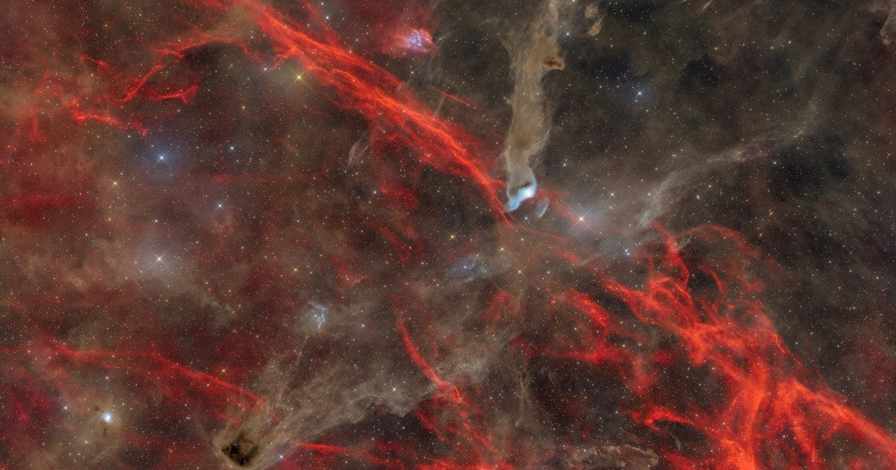

Объявление победителей конкурса астрофотографии 2026 года по версии журнала Astronomy
Журнал Astronomy с гордостью объявляет победителей своего конкурса астрофотографии 2026 года, представленного Celestron — первого фотоконкурса журнала за 13 лет.
Более 1400 фотографий поступило от фотографов со всего мира: от слабых туманностей и потрясающих планетарных крупных планов до впечатляющих солнечных снимков и красивых ночных пейзажей.
As astroimaging Continue reading "Объявление победителей Astronomy Magazine's 2026 Astroph